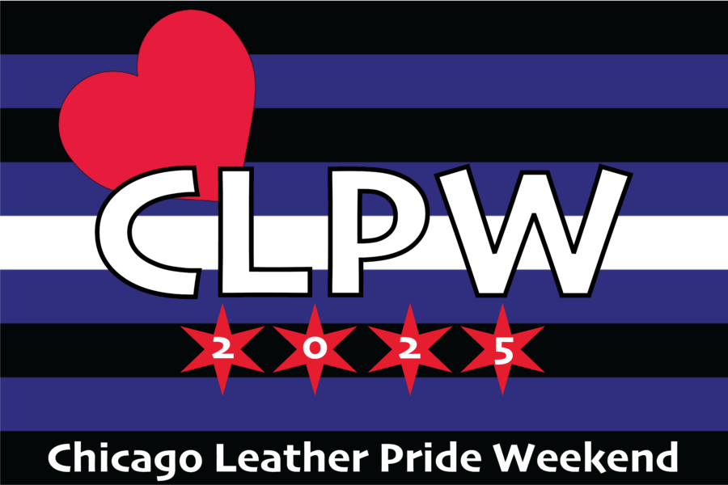

Chicago Leather Pride Weekend 2026
A Celebration of Leather Culture, Benefiting the LA&M.
A Weekend created to kick off Leather Pride Month in Chicago, raise awareness of our Community, and fundraiser for the Leather Archives & Museum.
Chicago Leather Pride welcomes all gender identities, and all expressions of kink & fetish!
Tickets and Weekend Passes NOW ON SALE!
For more info, go to: chicagoleatherpride.org
Last year we raised over $10,000 for the Leather Archives & Museum throughout the weekend!
We look forward to seeing you again at the 2nd annual Chicago Leather Pride Weekend!
Chicagoleatherpride.org